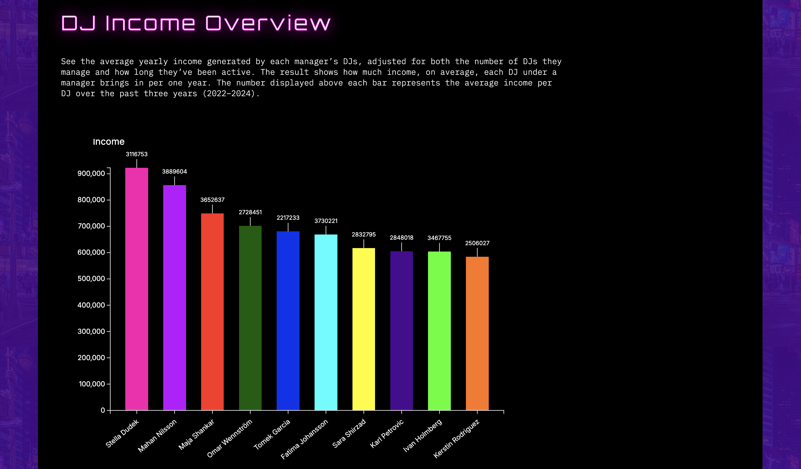
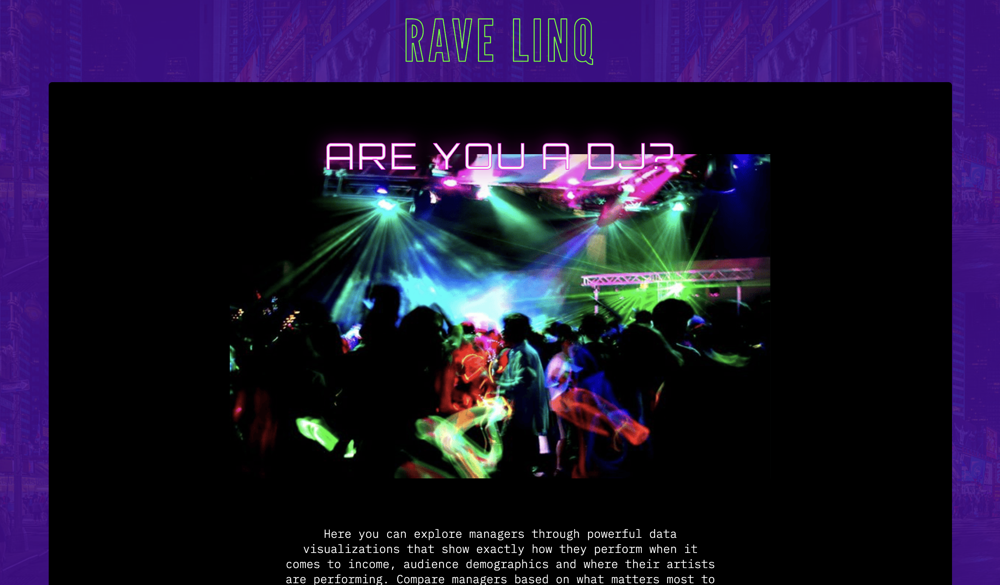

RaveLinq
A data visualization website about rave managers.

The Task
As part of the Web-Based Data Visualization course, the brief was to explore a dataset through interactive visualizations. We focused on the rave industry and chose to investigate the question: which manager would you recommend to a DJ? The goal was to use data analysis and visualization to compare managers and present the findings in a clear, accessible way.
The Process
To figure out which manager would suit a DJ best, we looked at factors like income, audience demographics
and how active each manager had been across different cities.
We then planned and designed the website and visualizations in Figma, before moving into implementation
- building the site with HTML, CSS and JavaScript, and using D3.js for the data visualizations.
As a pair project, we worked together throughout, from analysing the data to designing and building the
final website.
Tools
The Results
The final result was an interactive website where users can compare DJ managers based on yearly income, number of gigs booked and how often each manager arranged shows across different cities. Most charts are interactive, letting users filter and hover for detail, while one static chart gives a quick overview at a glance.
Homepage

DJ Income Overview
Annual Gig Distribution
City Reach & Frequency